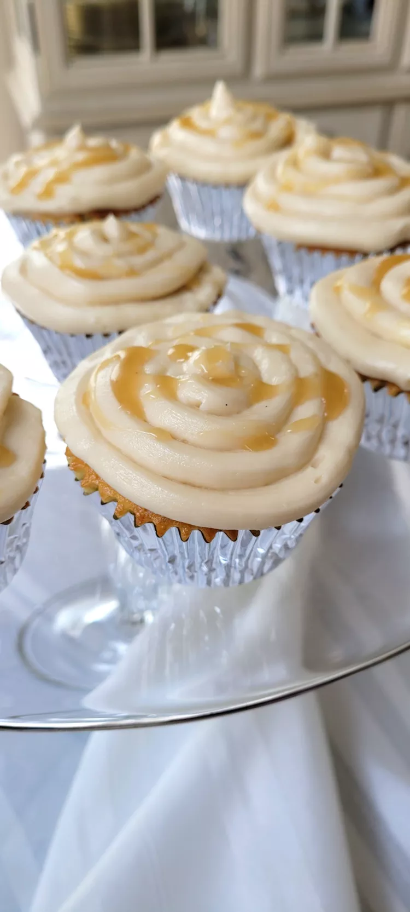

Cupcake recipe

Description
A delicious cupcake with a to-die-for frosting!
Ingredients
- 1 1/2 cups all-purpose flour
- 1 3/4 teaspoons baking powder
- 1 cup white sugar
- 1/2 cup margarine, softened
- 2 eggs
- 1 teaspoon vanilla extract
- 1 teaspoon almond extract
- 3/4 cup whole milk
- 1/2 cup brown sugar
- 1/2 cup margarine
- 2 tablespoons light corn syrup
- 1 tablespoon vanilla extract
- 1/2 cup heavy cream, or as needed
- 1 pinch salt
- 3/4 cup salted butter, softened
- 2 cups confectioners' sugar, sifted
Steps
- Preheat oven to 350 degrees F (175 degrees C). Line 12 cupcake cups with paper liners. In a bowl, whisk together the flour and baking powder.
- In a mixing bowl, thoroughly cream together the sugar and 1/2 cup of margarine until very well blended. Beat in the eggs, one at a time, until thoroughly combined, and stir in the vanilla and almond extracts. Gradually beat in the flour mixture, alternating with the milk, in several additions. Spoon the batter into the prepared cupcake cups, filling them about 2/3 full.
- Bake the cupcakes in the preheated oven until a toothpick inserted into the center of a cupcake comes out clean, 20 to 25 minutes.
- To make caramel, Place the brown sugar, 1/2 cup margarine, corn syrup, and vanilla into a large saucepan over medium heat, and bring the mixture to a boil. Reduce heat, and simmer until thickened, 3 to 4 minutes; remove from heat and allow to cool to warm (not hot) temperature. Add the cream, a little at a time, until the caramel has the consistency of honey. Mix in the pinch of salt, and allow to cool to room temperature.
- Beat the salted butter with confectioners' sugar in a bowl with an electric mixer on medium speed until the mixture is fluffy; slowly add and beat in the caramel, a tablespoon at a time, beating until the frosting is smooth.
Mainpage